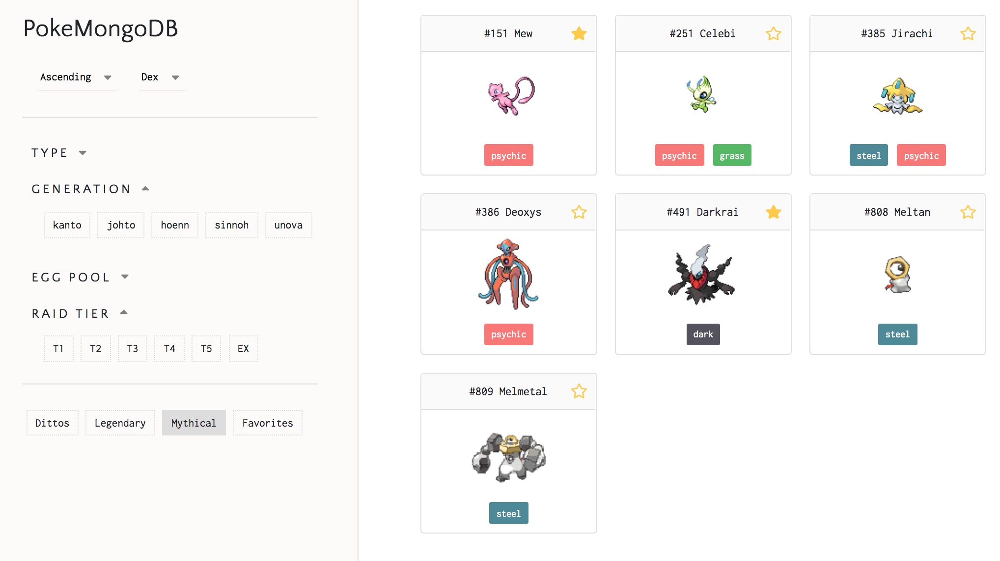

This is a React filter project built for the popular mobile game Pokemon Go, where players catch Pokemon in the "real world" via geolocation tracking. The game has released hundreds of such creatures for players to track down and catch, whether by encountering them nearby on a map, or going to a scheduled "raid" to catch a featured Pokemon, or hatching one from an egg unlocked by walking set distances—and one species specifically, Ditto, can only be found initially disguised as other Pokemon. Each Pokemon also has one or two of the 18 total elemental types that define effectiveness in battle—consequently, players commonly wonder thoughts like "are there any fighting type Pokemon in Tier 3 raids right now?" or “what are the chances I hatch a Gible next egg?”
The game developers frequently change up the pools of Pokemon featured in such mechanics. Thus, remembering all the different categories each species isn’t just a matter of memorization, but also constantly staying up to date. This is infeasible for most players, who end up just Googling various search terms one after the other—but even this is tedious. To solve this problem, we created a visual database that allows users to apply filters to what they want to see in one page. Check it out online here!
We used different tools, such as drop down vs a minimalized version of a checkbox to convey different purposes. In the case of “ascending/descending”, only one choice is possible, which led us to choose to use a dropdown box for this feature, since the dropdown only shows the option selected.
For filtering through types (electric, water, fire, etc), we emulated the logic of how multiple checkboxes can be selected, with a more minimal UI. In our implementation, the background becomes grey when these filters are selected, giving visual feedback of the user’s action. Multiple buttons are allowed to be selected given the user can filter many types.
Additionally, we incorporated an accordion style navigation for these more complex, listy filters so the user can easily sift through the filters they want to use. The accordion also serves to declutter the design, so the user can decide what information is important to them at the moment.
The images, dex number, and Pokemon names were scraped from The Silph Road and the types are scraped from PokemonDB. Data on Pokemon pools (eggs, raids, dittos) are from Leet Duck.